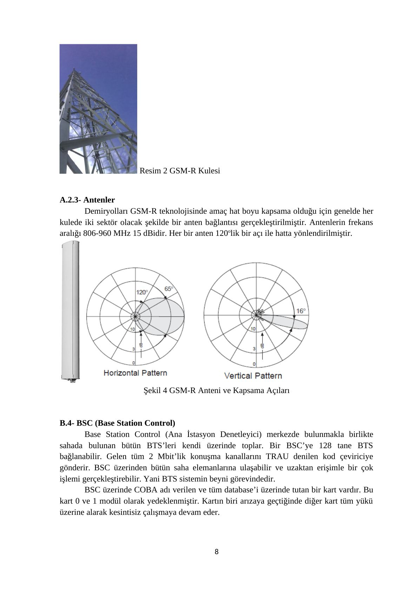
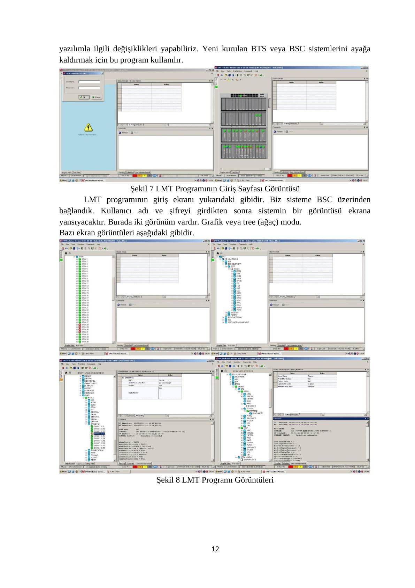

· STAJ
INTERNSHIP Summer Internship: TCDD High Speed Train (YHT) Regional Directorate EEM400 Internship Report (GSM-R, SDH and Fiber Optics, 2014)
STAJ – Yaz Stajı · 08.10.2014 · 14.11.2026
This post is the report of the internship carried out at the TCDD YHT (High Speed Train) Regional Directorate (Gar/Ulus, Ankara; 18 August – 12 September 2014) for the EEM400 internship of the Electrical-Electronics Engineering Department at Başkent University. The report was prepared by a friend (October 2014); the student's name, number, address and phone details have been removed. The report describes work done in the Telecommunications unit on the GSM-R system, digital transmission (SDH) and fiber optics. For the more comprehensive 70-page report from the same unit, see the post GSM-R, SDH and Fiber Optics. The report is 23 pages long and can be downloaded as a PDF at the end of the post (the organization chart pages in the appendix section were not included in the PDF because they contain personal photographs and names).
Section 1: General Introduction of the Organization
1.1- Information about the organization where the internship was carried out:
TCDD YHT Regional Directorate, Talatpaşa Bulvarı 06330 Gar/Ulus/ANKARA
1.1.2- Development and history of the organization:
The need to use time in the most efficient way, to minimize the damage that road transport vehicles do to the environment, and the fact that railways are a more reliable means of transport than other modes have pushed some developed countries in the world and in Europe to make significant investments in the construction of high-speed train lines. Since 2003, our governments have made railways a state policy once again, and this has inevitably put the shortening of travel time on the Ankara-Istanbul line, which constitutes the most important part of rail passenger transport, on the agenda. Work was started to build high-speed train lines on the corridors that will connect the large cities of our country in terms of passenger potential and population, such as Ankara, Eskişehir, Istanbul, Konya, İzmir, Sivas and Bursa. In 2003, TCDD started construction of the high-speed rail line between Ankara and Eskişehir. Test runs began on 23 April 2007, and the first passenger service was run on 13 March 2009. The 245 km Ankara-Eskişehir line reduced the journey time to 1 hour 25 minutes. This line also forms the first stage of the Ankara-Istanbul High Speed Train Line. With the completion of the Eskişehir-Istanbul High Speed Train Line and Marmaray, it will become the line that makes the first daily high-speed train service between Europe and Asia. The foundation of the Ankara-Konya High Speed Train Line was laid on 8 July 2006, and its first passenger service was run on 24 August 2011. The 94 km Ankara-Polatlı section of the total 306 km line was built within the scope of the Ankara-Eskişehir project. The line was built to be suitable for a speed of 300 km/h.
1.1.3- Parent organization and existing facilities:
The YHT Regional Directorate, which continues to exist within TCDD, is a State Economic Enterprise operating under the Ministry of Transport.
1.1.4 – Number of employees of the organization
26,184 personnel work within TCDD. TCDD has 21 Departments (Daire Başkanlığı). The YHT Regional Directorate operates as a unit running the high-speed train lines. It consists of a total of 17 units. Each unit has 1 engineer, 1 technician and a Facility Manager; in total, 12 engineers work there.
1.1.5- Status and capital structure of the organization:
TCDD is a State Economic Enterprise with legal personality, autonomous in its activities and with liability limited to its capital. The capital of the organization is 500 billion TL, all of which belongs to the state. The capital of the organization is changed by a decision of the Coordination Board upon the proposal of the relevant ministry.
1.1.6- Fields of activity of the organization:
The basic objectives and fields of activity of the organization are: to build new conventional, high-speed and very-high-speed railways; to operate, expand and renew the railways assigned to it by the state; to carry out complementary activities; to direct its establishments, subsidiaries and affiliates within the framework of laws, statutes, regulations, the Development Plan and annual programs; and to ensure coordination and cooperation among them.
1.2 – General Organization Chart of the Organization:
The General Organization Chart of the organization is given in APPENDIX-1.
1.3- Production and Working Methods of the Organization:
No production or assembly work is carried out at the YHT Regional Directorate. The organization works on monitoring and operating existing systems.
1.4- After-Sales Support and Other Customer Services:
Since no production or sales take place within YHT, activities such as after-sales support and customer services are not carried out.
1.5- R&D Activities of the Organization:
Within TCDD, there are R&D activities within the scope of the Domestic Signalization and National Train projects.
1.6- Partnerships with Foreign Organizations:
There are no partnerships with foreign organizations. There are international agreements; the UIC (International Union of Railways) is one of them.
1.7- Position of the Organization in the Sector and Sources of Revenue:
In Turkey, YHT is the only organization working and providing services in its field, and its source of revenue is the Undersecretariat of Treasury. It receives a share from the budget of the Ministry of Transport.
1.8- Level of Use of Computer Systems by the Organization:
Within YHT, computer systems are used in almost every area, such as monitoring trains in control centers, monitoring tracks and crossings, fault tracking, signalization and communications. The computers are connected through network structures within the relevant units. The organization has a SCADA fiber optic network, SDH and DWDM systems, and a GSM-R 850 MHz telephone exchange. It is an extremely modern organization.
Section 2: Work Carried Out During the Internship
During the internship, I worked in the Telecommunications unit within YHT. In the Telecommunications unit, I received the necessary technical information on the GSM-R system, the basic features of the system together with its advantages and disadvantages, the field elements of the system, technical buildings, the central unit, fault/alarm types, and the application of the GSM-R system inside the train, and thus gained knowledge of the operation and monitoring of the system and the clearing of faults. On the communications side, research was carried out on digital transmission, namely SDH and multiplexing (DWDM) technologies. I also had the chance to do practical work on the fiber optic system, fiber optic cables, the structure and types of the cables, and measurements and faults related to the cables.
The subjects I worked on:
A- GSM-R System
The GSM-R (Global System for Mobile-Railway) system is a system that provides communication and data transmission between the control center and the YHT train sets along the YHT line. There is communication, using the air interface, between the dispatcher who monitors train movements at the center and the train driver. With this system, the aim is to enable communication between the center and trains traveling at 250 km/h. In addition to normal GSM systems, handovers from one cell to another are faster in this system, and communication can be maintained without interruption even at speeds of around 500 km/h. Aware that communication is very important in rail transport, TCDD provides its own communications by forming a closed network with the GSM-R system. GSM-R is a technology with a proven track record and is currently in use in more than 15 countries worldwide.
At the beginning of the 1980s, there were many railway communication systems operating across Europe, which slowed down cross-border traffic and increased its cost. With increasing economic integration within the European Union, applying GSM systems to railways was considered in order to adopt a single standard in train radio communication. For this reason, GSM-R is a technology designed "for railways by railways". While it makes uninterrupted communication possible at a train speed of 250 km/h, it also supports a speed of 500 km/h. According to 2011 data, the GSM-R system is used on 150,650 km of the 221,025 km of European railways.
A.1- Why GSM-R?
- Interoperability: Provides railway communication without system boundaries
- Increases the travel speed of trains thanks to uninterrupted communication.
- Shortens travel time and increases comfort and convenience by providing uninterrupted passenger transport service.
- Increases track (line) capacity through a minimized distance between trains
A.2- GSM-R Field Elements

The field elements used to provide uninterrupted communication between Ankara-Eskişehir and Polatlı-Konya in the GSM-R system are given below.
BTS (Base Transceiver Station)
In the GSM-R system used in railway communications, communication is provided over 2 Mb channels. That is, the BTSs in the field are connected to each other with 2 Mbit channels. This is called PCM30. The BTS converts the signal it receives from the antenna into 2 Mbit speech channels. Alarms are also sent to the center over the 2 Mbit link.
Picture 1 BTS Plus
BTS Speech Channels
A 2 Mbit speech channel has a total of 32 channels, numbered 0-31. Each of these channels is made up of a TDMA (Time Division Multiple Access) frame of 125 µs. Of these channels, channels 0, 16 and 31 are the channels used for signaling communication.
Figure 2 BTS Speech Channels
In the railway GSM-R network, the frequencies are 876-880 MHz uplink and 921-925 MHz downlink. Each of these frequency bands is divided into 200 kHz frequency channels.
Figure 3 GSM Frequency Bands
A.2.1- Technical Buildings
For the systems along the railway line, technical buildings have been built approximately every 10 km. Inside these technical buildings are power panels and signaling systems, including the GSM-R systems.
A.2.2- Towers
The towers used in the railway GSM-R system are either 30 m or 50 m high, depending on the location. In GSM technology, 900 MHz (Turkcell, Vodafone), 1800 MHz (Avea) and 1900 MHz (only in the USA) are used. GSM-R technology also operates at approximately 900 MHz. In theory, it is possible to provide communication within a maximum radius of 35 km in systems operating at 900 MHz. In systems operating at 1800 MHz and 1900 MHz, this radius drops to 8 km. In railway GSM-R a 35 km radius is possible, but this distance decreases when it is considered that the terrain includes mountainous sections. Therefore, in GSM-R technology the distance between towers is approximately 10 km in order to provide uninterrupted coverage along the line. Depending on the terrain, 30 m or 50 m poles were used. Aircraft warning lights are used at the top of the poles. The towers are made of galvanized steel and have also been subjected to tensile and breaking tests. In GSM technology, there are 3-legged towers as well as 4-legged ones, and the 4-legged ones are the most preferred. All towers on the railways are 4-legged towers. For erecting the towers, the base legs are set on a 3 m x 3 m x 3 m concrete foundation.
Picture 2 GSM-R Tower
A.2.3- Antennas

Since the aim in railway GSM-R technology is coverage along the line, an antenna connection with two sectors per tower has generally been implemented. The frequency range of the antennas is 806-960 MHz with 15 dBi gain. Each antenna is directed toward the line with an angle of 120°.
Figure 4 GSM-R Antenna and Coverage Angles
A.2.4- BSC (Base Station Controller)
The Base Station Controller is located at the center and aggregates all the BTSs in the field onto itself. Up to 128 BTSs can be connected to one BSC. It sends all incoming 2 Mbit speech channels to the transcoder called the TRAU. Through the BSC, all field elements can be reached, and many operations can be carried out by remote access. That is, the BSC acts as the brain of the system.
On the BSC there is a card called COBA, which holds the entire database. This card is redundant as module 0 and module 1. When one of the cards fails, the other takes over the entire load and continues to operate without interruption.
On the BSC there is a card called PEXE that collects environmental alarms and plays a role in displaying them on the screen. Thus, when a fault occurs in the network, the alarm is displayed via this card.
A.3- Transcoder Unit (TRAU)
This module, called the TRAU (Transcoding and Adaptation Unit), is responsible for encoding and compressing the 2 Mbit speech channels between the BSC and the MSC. The TRAU is also the element responsible for rate adaptation between the BSC and the MSC. The TRAU compresses four 2 Mbit speech channels onto one PCM30 and forwards them to the LTG on the MSC. This interconnection is made with a fiber optic cable. The fiber optic cable coming out of the TRAU enters the LTG (Line Trunk Group) through a connection device called FOT-X. The FOT-X converts the light signal coming from the fiber optic into an electrical signal and passes it to the relevant card.
Picture 3 GSM-R TRAU
Figure 5 Simple Representation of the GSM-R Structure
A.4- Power Supplies

In the technical buildings, the GSM-R systems are powered from the catenary system used by the railways and from the mains. On the catenary and mains power panel, there is a rack called the OTP, containing two isolation transformers. The catenary is single-phase and supplies 230 V AC to the OTP. After the isolation transformer for the catenary voltage, a catenary filter and a stabilizer are installed. The purpose of this is to prevent damage to the systems, since the catenary voltage is variable. The stabilizer balances any excess voltage that may come from the catenary. This is because the railway catenary is 27,500 V. Therefore, a catenary transformer must be used for the 27,500 V – 230 V conversion.
The mains voltage is supplied by TEDAŞ and is a constant 220-230 V. For this reason, a stabilizer and filter are not needed for the mains.
There is also a time relay in the OTP rack. After power is applied, it engages within 8 s and protects the system against overcurrents.
The primary supply for the GSM-R systems in the technical building is provided from the catenary.
Figure 6 Electrical Structure of the OTP Panel
The system operates at 48 V DC. The AC voltage coming from the OTP panel goes to the rectifier. The rectifier is a system that feeds the batteries. Therefore, the output is DC. To power the system, there are four 12 V, 60 Ah dry lead-acid batteries. The system draws approximately 20 A.
A.5- Access to Field Elements
A.5.1- LMT (Local Maintenance Terminal)

The Local Maintenance Terminal is a management terminal that can be connected via a serial port (25DB) on the BTS or BSC. In short, it is the user interface. The connection speed is 4.8 Kbit/s. With this program, we can see the faults on the system and make the necessary software-related changes on the system. This program is used to bring up newly installed BTS or BSC systems.
Figure 7 LMT Program Login Page
The login screen of the LMT program is as above. We connected to the system via the BSC. After entering the username and password, an overview of the system appears on the screen. There are two views here: graphic or tree mode.
Some screenshots are as follows.
Figure 8 LMT Program Screenshots
A.5.2- RC (Radio Commander)
RC is a powerful system with a large server behind it, running the LINUX operating system. With Radio Commander, an entire network can be seen on a single screen at the same time. Faulty systems can be detected instantly, and it can even give audible warnings. All sites can be controlled at the same time. With RC, the BSC and BTS systems can be intervened on. Reports can be generated. It is more powerful than the LMT program, but the LMT is used for commissioning.
Figure 9 RC Main Page Screenshot
Figure 10 GSM-R RC Screenshot
A.6- In-Train GSM-R System
A.6.1- Cab Radio

CAB_RADIO installations have been made inside the train cab so that the driver can connect with the center. Each train has two cab radios, one at the front and one at the rear. The cab radio consists of an MMI (display), a handset, a loudspeaker, an antenna and a radio unit. One antenna resembling a shark fin is mounted on the train set. It provides uninterrupted communication between the trains and the center between Ankara-Eskişehir and Konya-Polatlı. There are 12 train sets in total, with 24 cab radios. Emergency calls, group calls or normal GSM-R calls can be made via the MMI. The cab radio is mounted in a cabinet inside the set. All connections are controlled from the radio through a box called the GLENDBOX.
Figure 11 In-Train GSM-R Equipment
Figure 12 CabRadio Connection Diagram
A.7- Alarms
Alarms coming from the field elements can be easily seen via the RC. When a fault occurs at any site, it is displayed on the screen. The alarm types are listed below.
A.7.1- Alarm Types
a. Communication alarm: A communication alarm is, in principle, related to the procedures and/or processes needed to transmit information from one point to another.
b. Quality of service alarm: A quality of service alarm is, in principle, related to a degradation in the quality of a service.
c. Processing error alarm: A processing error alarm is, in principle, related to a software or processing error.
d. Equipment alarm: An equipment alarm is, in principle, related to a hardware fault.
e. Environmental alarm: An environmental alarm is, in principle, related to a condition of the enclosed environment in which the equipment is located.
Alarms are also classified by severity as critical, major and minor. Alarms are cleared automatically or manually when the fault ends.
Figure 13 Alarm Screenshots on the RC
A.8- Center
The central exchange has a very complex structure. The connection between the center MSC and the BSC is made through the TRAU. The 2 Mbit channels coming out of the TRAU arrive via fiber optic at a rack group called the LTG (Line Trunk Group). From there they go to the SSNC (Sub-switching Network Center). After switching is done here, the connection is established at the CP (Control Processor). If a data connection is to be made over GPRS (General Packet Radio Service), the connection is made from a slot called the Gb interface on the BSC to the SCSN rack. When an SMS (Short Message Service) is sent, the connection is made on the LTG to the SMSC rack.
In fact, the most important unit at the center is the SSNC, because it is where all network switching is performed. The system also allows short-code dialing. For example, we can call the Dispatcher center with the short code 1200. In fact, behind the dispatcher center number 1200 there is an 11-digit number. It is also possible to send messages via this short code. For this call to be made, there is a unit called the Intelligent Network (IN). In short-code dialing, before establishing the connection with the CP, the SSNC asks whether the short code is defined on the IN; if it is defined, the IN sends the 11-digit number behind the short code to the SSNC. After that, the SSNC establishes the connection with the CP.
For a connection to be made, you must be registered in the network. Within the CP there are units called HLR (Home Location Register) and VLR (Visitor Location Register). The HLR records the 18-digit number on the SIM card that begins with 28611xxxxxx. During a call, whether this number exists in the HLR is checked at the authentication center called the AC (Authentication Center). If it exists, the connection is established. The VLR handles the connections of SIM cards that belong to another MSC. However, since there is only one MSC on the railways, there are no connections with other MSCs (AVEA, TURKCELL, VODAFONE).
For PBX connections to be possible in the system, there is a mini exchange called HI-PATH that is compatible with the system. Through this exchange, railway internal network connections can be made.
The center system can also make calls to emergency numbers such as 110, 112, 155 and 156. These calls can be made at any desired point along the railway line.
In addition, there is a server called NICE on which all conversations related to train traffic are recorded. The connections between the dispatcher and the drivers are recorded here. With these Windows 2003 server-based PCs, recordings are kept for at least 6 months.
A.8.1- Center Control Room
There is a control room at the center to be able to control the entire system. There are a total of 9 computers here, including redundant ones. These are Radio Commander, IN, NICE, Switch Commander (2 units), GPRS Commander (2 units), TNMS (for the SDH system), and SPOTS (for call traffic).
A.8.2- SC (Switch Commander)
The most important computer in the Center Control room is the SC system, through which many authorizations can be granted on the MSC exchange. This computer runs with the MML command system and is directly connected to the CP. It can control the LTG, CP and SSNC.
B- Communication Systems
B.1- Digital Transmission
Digital transmission is the transmission of digital pulses between two points in a communication system. The initial source information may be in digital or analog form. If the source information is analog, it is converted into digital pulses before transmission and back into analog form at the receiver. The most important advantages and disadvantages of digital transmission compared with analog transmission are as follows.
B.1.1- Advantages of Digital Transmission
1- Its immunity to noise is the most important advantage. Analog signals are more prone to undesired amplitude, frequency and phase variations than digital pulses. The reason is that in digital transmission it is not necessary to evaluate these parameters as fully and precisely as in analog transmission.
2- Digital pulses are more suitable than analog signals for switching and multiplexing. Digital pulses can easily be stored, whereas storing analog signals is not easy. In addition, the transmission rate of a digital system can easily be changed so that it can be connected through an interface to different equipment suited to different environments.
3- It is possible to correct errors.
4- It can be easily realized with integrated circuit techniques.
B.1.2- Disadvantages of Digital Transmission:
1- Transmission of digitally encoded analog signals requires more bandwidth than transmitting the analog signals as they are.
2- Analog signals must be converted into digital codes before transmission and back into analog form at the receiver.
3- Digital transmission requires synchronization between the clock pulses of the transmitter and the receiver.
4- Digital transmission systems are not compatible with the analog system equipment in use today.
B.2- SDH SYSTEM
Operating Principle of SDH: We can explain the transfer of information from one point to another in SDH by likening it to a freight transport operation. Let us imagine that SDH transmission is carried out with information packets of various sizes carried by trucks traveling through the network at approximately the speed of light. The size of the trucks indicates that the SDH element operates at a trunk rate such as 155 Mbit/s, 622 Mbit/s and 10 Gbit/s. The service signals can be voice, data and video. The service signals are packaged in a special way by the sending SDH element and loaded onto the trucks. When the truck reaches the other SDH element, only this packet is reached and unloaded. If there is another packet to be put in its place, it is placed in the vacated spot. The places where each SDH element will pick up its load and load onto the truck are determined in advance, and this kind of information transmission on the network is called add/drop. SDH elements know the position of the virtual containers belonging to them within the truck and obtain their information by reaching these packets directly.
B.2.1- Advantages of SDH
- Bit rates above 140 Mbit/s were internationally standardized for the first time.
2. The code for transmission of the optical signal over the line has been standardized. Therefore, it is compatible with the line equipment of different manufacturers. Thus manufacturers can produce systems more cheaply for a single world market.
3. Modular structure: the multiplexed bit rates are produced as integer multiples of the basic bit rate. The frame structure of the multiplexed signals is identical to the frame structure of the basic signal. This means that no new frames need to be defined.
4. Access to a single channel in the multiplexed signal is possible by evaluating indicator data. Since only the desired channels need to be separated out, this method is an advantage for branching with cross-connect systems.
5. Network resources are synchronized to a single master clock.
6. It provides powerful network management capability. This means flexibility and high reliability.
7. Protection and redundancy against trunk line and network element failures are possible.
8. Transmission of wideband signals envisaged for the future is possible.
9. Conversion of an electrical signal to an optical signal is possible without complex line coding. Error monitoring is carried out through full parity supervision in the various transmission sections.
B.2.2- Disadvantages of SDH
It is a complex and meticulous technique because the relationship between the tributary signal and the pointer in the header must be recorded.
Due to the American origin of SDH, some inadequacies remain regarding the transmission of CEPT hierarchy signals. For example, although its capacity would allow transmission of a 4x34 Mbit/s signal, only 3x34 Mbit/s of data can be transmitted in an STM-1.
C- Fiber Optic System
C.1- Fiber Optic System
Fiber optics is a system that works on the principle of transmitting light through a very precisely manufactured pure glass strand about as thick as a human hair. The biggest reason for preferring cables manufactured in this way is that they are not affected by places where environmental conditions are very harsh, humid and damp, or where electric field interference is heavy, and that they always provide a stable connection. Fiber optic cables carry out transmission at the speed of light, 300 thousand km per second. For these reasons, they are designed for data transfer over long distances. Electronic communication is fundamentally carried out by the displacement of electrons. Therefore, factors such as the type, structure and dimensions of the conductor used affect the communication speed. As a result of research, after sound and electricity, light has also begun to be used for communication. Fiber optic strands were developed for information transfer with light. Systems that carry information via fiber optics are called fiber optic systems.
C.1.1- Advantages of Fiber Optic Cable
- Wide bandwidth
- Low loss
- Electromagnetic immunity
- Reliability
- Light weight
- Small size
- Resistance to radioactive radiation
- Information security (no leakage)
- No grounding problem
- Flexibility
C.1.2- Disadvantages of Fiber Optic Cable
- Splicing end to end is not easy.
- Requires extra maintenance care.
- It is somewhat expensive economically.
C.2- Parts of the Fiber Optic

Core (φ: 9 / 50 / 62.5 microns) Cladding
- Coating (φ: 200 microns)
2. Coating (φ: 250 microns)
Figure 22 Fiber Optic Cable and Its Structure
Core: The thin glass layer in which the light travels.
Cladding: The part made of optical material surrounding the core, which reflects the light back into the core.
Coating: The outer layer that protects the cable against impacts and moisture.
C.3- How Do Fiber Optic Cables Transmit Light?
The beam of light sent from the laser initially follows a straight path. At the points where the cable bends, the light signal hits the glass cladding, as shown in the figure, and is reflected back. In this way the light signal continues along its path in the core.
Figure 23 Movement of Light in a Fiber Optic Cable
C.4- Types of Fiber Optic Cable
C.4.1- Single-Mode Fiber:
Used to carry information over long distances. Generally this distance is 80 km. For longer distances, a repeater or SDH is required.
C.4.2- Multimode Fiber:
Used mostly to carry information over short distances. However, more light signals can be sent simultaneously with these fibers. The maximum distance is 2 km.
I learned about the patch cables, patch panels and fiber optic connectors used with fiber optic cables.
C.5- Fujikura OTDR Device
The Fujikura OTDR device used on the railways is used for measuring fiber optic cable.
Picture 5 Fujikura OTDR Device
Applications that can be performed with this device:
- Fault finding
- Power level tests
- Optical spectrum analysis tests
- Attenuation profile tests
- Chromatic dispersion tests
- Signal loss and optical return loss tests
The device is very flexible since it is small and portable. It is also easy to use.
C.6- Fiber Optic Measurement:

A fiber optic measurement made with the Fujikura OTDR device is shown in the figure below:
Connector Connections, OTDR SCREEN, Splice Points, Test Cable, Initial Signal, Power (dB), Connector Connection Reflections, Cable Splice Losses, Fiber Optic Losses, Connector Connection Losses, Distance (km). The image displayed on the screen in the measurement we made is similar to this figure.
Figure 26 OTDR Screenshot
Section 3: Benefits Gained from the Internship
During my EEM400 internship, I worked on monitoring the system installed within YHT, its healthy operation, and the detection and repair of possible faults. I made observations on how monitoring is done at the points where trains pass, and on how the trains and the passengers inside them benefit from transportation services in the safest and fastest way. I observed how a complex and demanding system like YHT is divided into units according to their functions, and the areas of work of these units. I had the chance to observe how superior-subordinate relationships work in a state organization. In the Telecommunications unit where I did my internship, there was a team that went to the fault location in the field to clear faults; by going with this team to lines close to the center, such as the Sincan-Kayaş line, I had the chance to see field elements such as antennas and towers on site. I observed how faults are intervened on.
Through the engineer responsible for us in the unit, I received information about digital transmission (SDH) and multiplexing (DWDM) technologies, and by doing research on these subjects I gained an idea about communication technologies.
I had the chance to work on fiber optic cables. I learned about the working principles, structures, and maintenance and repair of the fiber optic cables used within YHT. I did practical work on fiber optic cable measurements with the OTDR device, which allows faults on the line to be detected. I also did practical work with the device used for fiber optic cables that are broken or need to be spliced, and thus gained knowledge of the field side of the job. All of these experiences gave me important ideas about how working life operates and how to respond to the problems encountered. In addition, on top of my theoretical knowledge, I had plenty of opportunities for practical work and improved myself in this respect as well.